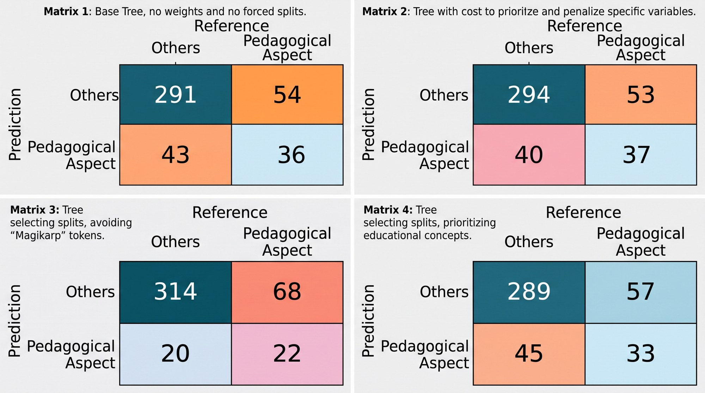

Decision trees and their confusion matrices
Click any confusion matrix to open the interactive decision tree that produced it.

Open tree 1 →
Open tree 2 →
Open tree 3 →
Open tree 4 →
Tree 1
Base tree, no weights and no forced splits.
Tree 2
Cost to prioritize and penalize specific variables.
Tree 3
Selected splits, avoiding “Magikarp” tokens.
Tree 4
Selected splits, prioritizing educational concepts.